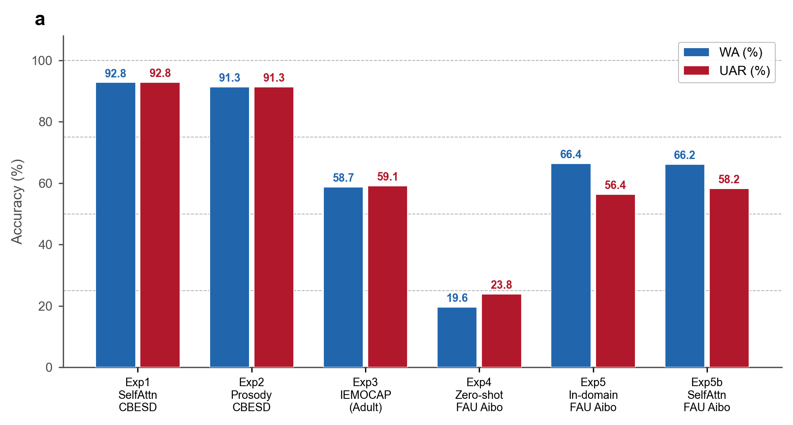
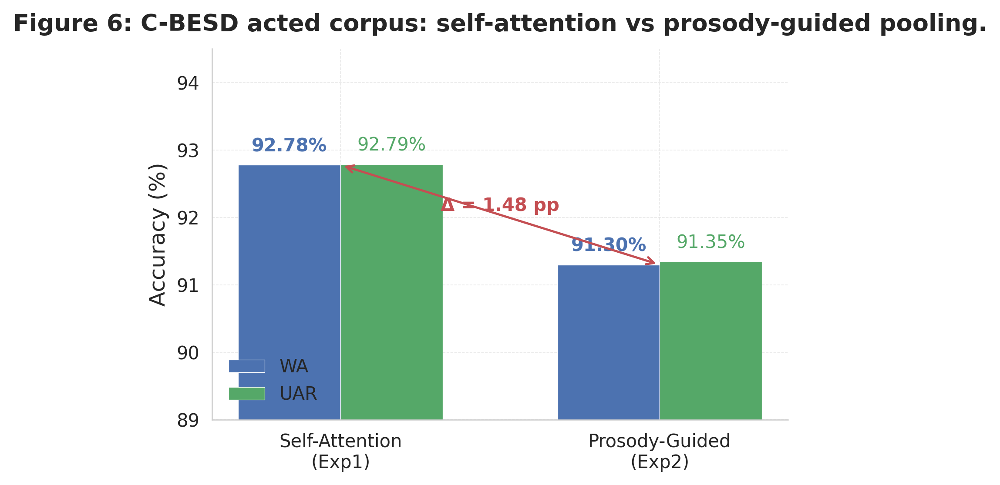
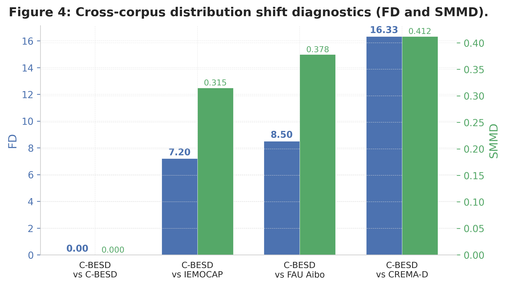
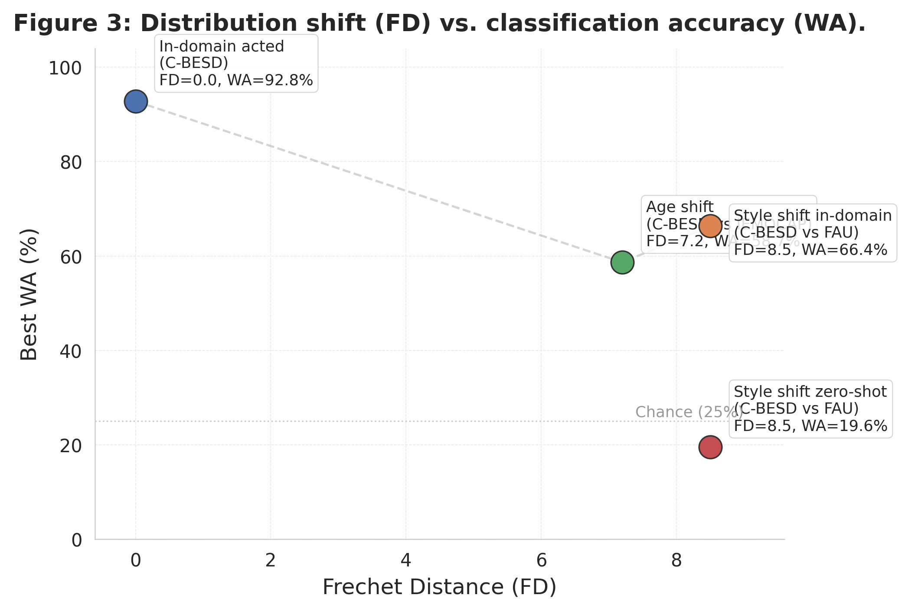
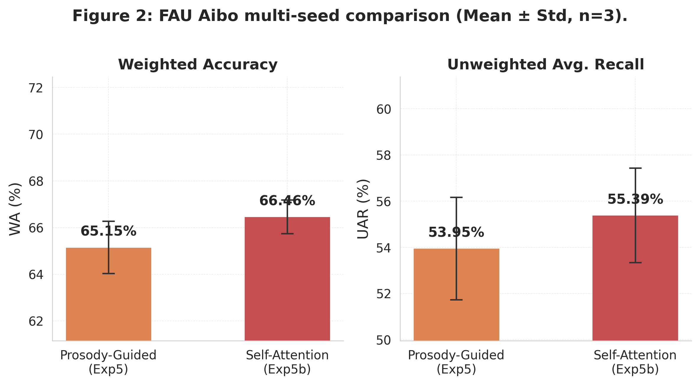
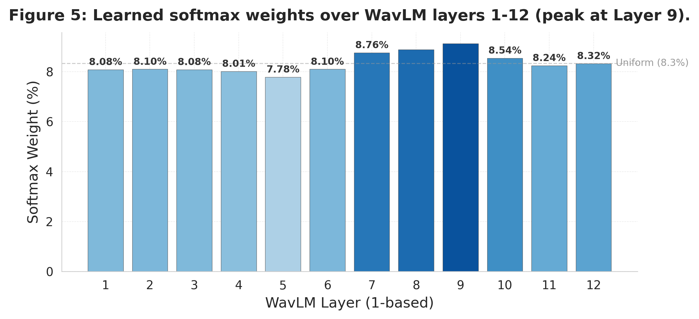

匿名投稿 · 2026
儿童语音情绪识别系统通常在表演式语料上训练和评估，却部署于自然式场景。本文通过覆盖表演式儿童语音（C-BESD）、自然式儿童语音（FAU Aibo）和成人语音（IEMOCAP）的六组受控实验，量化这一差距。在冻结 WavLM 骨干、可学习 12 层融合和参数严格对等的池化头（各 111,105 参数）条件下，系统对比了韵律引导时序重要性池化与纯自注意力池化。三项核心发现：（1）从表演式到自然式儿童语音的零样本迁移降至 19.56% WA（低于四类随机基线 25%），而域内表演式达 92.78%，分布偏移（C-BESD 与 FAU 特征空间 FD=8.50, SMMD=0.378）而非架构是主要失败模式。（2）在强正则化的自然式 FAU 语音上，韵律引导池化达到 66.36% WA，与自注意力持平（66.18%），同时作为结构正则化器抵抗环境噪声过拟合。（3）仅牺牲 1.48 个百分点即可换取可解释性：注意力权重与帧级能量强相关（APCwav=0.718），为安全敏感场景提供可审计的决策依据。
关键词：儿童语音情绪识别 · 分布偏移 · 韵律引导池化 · 可解释性 · Fréchet 距离
语音情绪识别在教育情感计算、儿科心理健康筛查和人机交互中有广泛应用。但儿童语音情绪识别面临三个结构性挑战。
声学差异。儿童声道短、声带薄，基频显著高于成人。对 2,000 条 C-BESD 语音的测量显示 F0 均值为 495.9 Hz（标准差 651.1 Hz，第 95 百分位 2285.7 Hz），而成人会话 F0 典型范围约为 120–210 Hz。面向成人语音设计的模型和特征工程策略不能直接迁移。
语料生态。C-BESD（2,780 条，马来语）是表演式语料——儿童按指定情绪朗读固定句子。FAU Aibo（18,216 条，德语）来自儿童与 Sony Aibo 机器人的自由玩耍录音，是自然式语料 [Steidl, 2009]。两者的情绪表达方式根本不同：表演式语料中的情绪夸张且声学上模板化，自然式语料中的情绪微弱、重叠、受噪声干扰。[需补充：C-BESD 数据集原始论文]
工程经验不可迁移。数据增强在成人 SER 中是标配，但我们前期实验发现即使在儿童参数约束范围内（pitch ±3 半音、语速 0.85–1.15），准确率仍下降 19.6 个百分点。儿童语音中的情感信息对波形扰动高度敏感——这正是本文"分布驱动"视角的出发点。
WavLM [Chen et al., 2022] 等自监督学习骨干提供了强大的帧级表示，但下游设计决定了情感信息是被提取还是被语料伪影淹没。Kakouros 等人 [2022] 在 IEMOCAP 上使用冻结 WavLM + 注意力池化取得 75.60% UAR（4 类），但评估仅在域内进行，未涉及儿童语音。Dong 等人 [2026] 系统评估了 11 种测试时自适应方法，发现跨语料库泛化效果有限——分布偏移是系统瓶颈，而非特定模型的失败。
儿童的情绪表达与韵律紧密相关：音高变化、能量爆发和节奏不规则性在儿童中与成人有系统性差异 [Fan et al., 2024]。我们的假设是：将帧级 F0 和 RMS 能量显式注入时序注意力，可提供一种归纳偏置，它（1）加速学习，（2）在自然式语音上起结构正则化作用，（3）将决策锚定于可测量的声学事件——这是纯数据驱动注意力无法提供的可解释性。
流水线分为四个阶段。（1）原始波形经 16 kHz 重采样、单声道、peak normalization、4 秒截断（200 帧，50 Hz）。（2）冻结 WavLM Base+ [Chen et al., 2022]（94.4M 参数）提取每帧 12 层隐藏状态（B×T×768）。（3）可学习层融合模块用 12 个 softmax 标量权重将全部隐藏状态合并为单一特征图。（4）融合特征经过两种参数对等的池化头之一——韵律引导或自注意力——再由 SEMLP 分类器（593K 参数）输出 4 类 logits。总可训练参数约 704K，不足骨干的 1%。
韵律引导池化。F0 通过 YIN 算法 [de Cheveigné & Kawahara, 2002] 提取（C2–C7, 65–2093 Hz），RMS 能量通过 librosa [McFee et al., 2015] 提取，帧移 320 样本与 WavLM 帧率对齐。F0 除以 2093 Hz 归一化，能量逐批归一化。2 维韵律向量经 2 层 MLP（2→64→64）投影为 64 维嵌入，与 SSL 特征拼接（768+64=832），再经注意力 MLP（832→128→1）生成逐帧分数，softmax 加 mask 后加权求和。
自注意力池化。结构相同但不注入韵律特征：SSL 特征直接经 4 层注意力 MLP（768→116→100→100→1）。两种池化头的参数数量（111,105）由运行时断言验证严格相等。
| 语料 | 语言 | 类型 | 总量 | 训练 | 验证 | 测试 | 说话人 |
|---|---|---|---|---|---|---|---|
| C-BESD | 马来语 | 表演式 | 2,780 | 1,851 (162) | 389 (36) | 540 (39) | 237 |
| IEMOCAP | 英语 | 对话式 | 8,525* | 4,313 (5) | 1,841 (2) | 2,371 (3) | 10 |
| FAU Aibo | 德语 | 自然式 | 18,216 | 11,577 (35) | 3,250 (7) | 3,389 (9) | 51 |
* 1,269 条 IEMOCAP 因标签非四类被丢弃。括号内为说话人数。MD5 hash 确定划分，70/15/15，seed=42。运行时断言保证训练/验证/测试说话人零重叠。
| Profile | Weight Decay | Label Smooth | Dropout | Grad Clip | 适用语料 |
|---|---|---|---|---|---|
| default | 1×10−3 | 0.1 | 0.0 | — | C-BESD, IEMOCAP |
| fau | 5×10−3 | 0.15 | 0.3 | 1.0 | FAU Aibo |
所有实验：AdamW, lr=3×10−4, CosineAnnealing (Tmax=100), patience=15 监控 val WA, batch size=16, max 100 epochs。主实验 seed=42；FAU 多种子 {42, 123, 456}。
| Exp | 训练 | 测试 | 池化 | 正则 | 研究问题 |
|---|---|---|---|---|---|
| Exp1 | C-BESD | C-BESD | Self-Attn | default | 表演式语料数据驱动上限 |
| Exp2 | C-BESD | C-BESD | Prosody | default | 韵律注入对表演式语料的影响 |
| Exp3 | IEMOCAP | IEMOCAP | Prosody | default | 成人对话式基线 |
| Exp4 | C-BESD | FAU Aibo | Prosody | default | 零样本跨域迁移（核心实验） |
| Exp5 | FAU | FAU | Prosody | fau | 自然式域内韵律池化 |
| Exp5b | FAU | FAU | Self-Attn | fau | 自然式域内自注意力对照 |
| Exp | 训练→测试 | 池化 | WA (%) | UAR (%) | Epoch | N |
|---|---|---|---|---|---|---|
| Exp1 | C-BESD→C-BESD | Self-Attn | 92.78 | 92.79 | 30 | 540 |
| Exp2 | C-BESD→C-BESD | Prosody | 91.30 | 91.35 | 10 | 540 |
| Exp3 | IEMOCAP→IEMOCAP | Prosody | 58.67 | 59.11 | 8 | 2,371 |
| Exp4 | C-BESD→FAU Aibo | Prosody | 19.56 | 23.83 | 10 | 3,389 |
| Exp5 | FAU→FAU | Prosody | 66.36 | 56.35 | 3 | 3,389 |
| Exp5b | FAU→FAU | Self-Attn | 66.18 | 58.23 | 2 | 3,389 |
12/12 JSON 通过 verify_experiment_jsons.py 验收。Exp4 仅在测试说话人（9 人，3,389 条）上评估。Exp1 训练日志确认 test WA (92.78%) ≈ best val WA (92.80%)，排除数据泄露。

最关键的结果是 Exp4：在表演式 C-BESD 上达到 92.78% 的模型，零样本迁移至自然式 FAU Aibo 仅剩 19.56%——低于四类随机基线。这不是模型设计的失败，而是分布偏移的失败：表演式语料编码了夸张的声学原型，与自然式儿童语音几乎没有可迁移的共性。73.2 个百分点的差距首次量化了儿童语音领域"表演→自发"的鸿沟。
在表演式 C-BESD 上（图6），自注意力比韵律引导池化高 1.48pp WA（92.78% vs 91.30%），但韵律引导收敛快 3 倍（epoch 10 vs 30），说明韵律特征提供了更强的归纳偏置。

| 数据集对 | FD | SMMD | 偏移构成 |
|---|---|---|---|
| C-BESD vs C-BESD | 0.00 | 0.000 | 同分布（定义） |
| C-BESD vs IEMOCAP | 7.20 | 0.315 | 儿童→成人 + 马来语→英语 + 表演→对话 |
| C-BESD vs FAU Aibo | 8.50 | 0.378 | 表演→自发 + 马来语→德语 |
| C-BESD vs CREMA-D | 16.33 | 0.412 | 儿童→成人 + 马来语→英语 + 表演→表演（参考） |
DistributionShiftProbe 方法：在线 WavLM 特征 → mean pooling → 768 维句级嵌入，max 500 样本/语料，seed=42。

| 条件 | FD | WA (%) | 实验 |
|---|---|---|---|
| 域内表演（同语料） | 0.00 | 92.78 | Exp1 |
| 年龄偏移（成人域内） | 7.20 | 58.67 | Exp3 |
| 风格偏移（域内训练） | 8.50 | 66.36 | Exp5 |
| 风格偏移（零样本） | 8.50 | 19.56 | Exp4 |

Exp4 和 Exp5 共享相同的分布距离（都是 C-BESD vs FAU，FD=8.50），但 Exp5 域内 WA（66.36%）比 Exp4 零样本 WA（19.56%）高 46.8pp。这揭示了双重机制：（1）分布距离决定性能上限（零样本崩溃），但（2）域内训练数据可部分补偿。FD 单独不能解释全部性能差异——训练数据的信息量同样关键。
| 种子 | Exp5 WA (%) | Exp5 UAR (%) | Exp5b WA (%) | Exp5b UAR (%) |
|---|---|---|---|---|
| 42 | 66.36 | 56.35 | 66.18 | 58.23 |
| 123 | 63.65 | 51.00 | 65.76 | 53.50 |
| 456 | 65.44 | 54.49 | 67.44 | 54.44 |
| Mean±Std | 65.15±1.12 | 53.95±2.22 | 66.46±0.72 | 55.39±2.05 |

| 指标 | 值 | 含义 |
|---|---|---|
| APCwav | 0.718 | 注意力权重与 RMS 能量的 Pearson r（强正相关） |
| APCdelta | −0.144 | 韵律注入后注意力与纯声学韵律的冗余降低 |
| Layer argmax | 9（1-based） | WavLM 12 层中 softmax 权重最大（0.091） |
| Layer entropy | 2.48 | 层权重分布接近均匀（ln 12≈2.48） |
APC 仅基于 1 条样本。全测试集（540 条）均值可提供更稳健的估计。

C-BESD 域内 92.78% 的模型零样本迁移至 FAU Aibo 仅剩 19.56%。该发现与成人 SER 文献一致——Kakouros 等人 [2022] 报告的 75.60% IEMOCAP UAR 同样来自域内评估，Dong 等人 [2026] 发现 11 种 TTA 方法跨语料库效果有限。我们的贡献是将这一系统性局限扩展到儿童语音：继承自成人 SER 的表演式语料评估协议，系统性地高估了真实场景的儿童 SER 能力，高估幅度可达 73pp。
在表演式语料上，自注意力享有 1.48pp 的 WA 优势。在自然式语料上，两者性能相当，但韵律引导池化收敛更稳定（epoch 3 vs 2），且将注意力锚定于可解释的声学事件。我们将其解释为：显式韵律先验在自然式语音中充当结构正则化器——通过将注意力约束于 F0 变化和能量爆发，模型更不易过拟合环境噪声和录音伪影。在儿科心理健康筛查等安全敏感场景中，能解释为什么做出某个预测的模型，比仅报告置信度分数的模型更有实际价值。但我们未进行临床验证，此论点仍属技术层面推断。
未来方向包括：引入更多自然式儿童语料验证 FD-Accuracy 框架的广泛适用性；在全测试集上计算 APC 均值；探索对 WavLM 骨干做领域自适应微调以缓解零样本迁移的性能崩溃；将手工韵律提取器（libROSA YIN）替换为可端到端学习的小型网络，保留可解释性的同时降低推理开销。